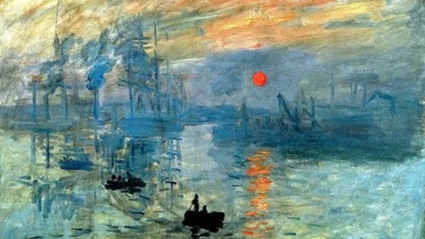
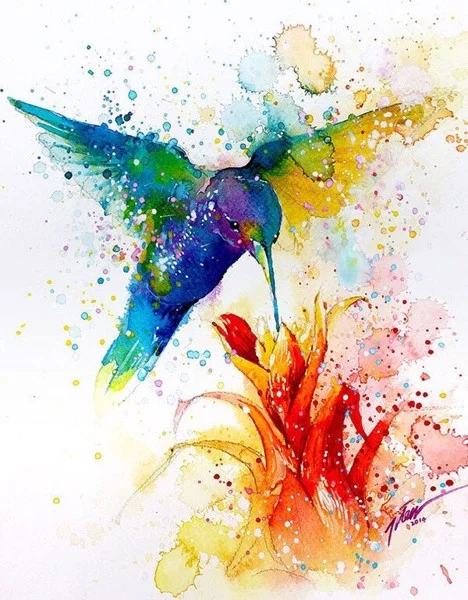
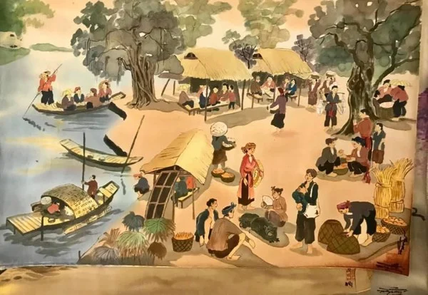

Trang chủ
Tác phẩm
Liên hệ
TRANH VẼ
Các thẻ loại tranh vẽ phổ biến
Hội họa là kho tàng vô cùng quý báu của vũ trụ, được bắt nguồn từ tâm thức
và cấu tạo bởi thiên nhiên, qua mắt nhìn của người nghệ sĩ để biến chúng
thành những tác phẩm để đời. Vậy có tất cả bao nhiêu thể loại tranh vẽ,
hãy cùng HaMiLa điểm qua một vài thể loại tranh tiêu biểu nhé:
1. Tranh sơn dầu
-
Tranh sơn dầu là bức tranh được tạo nên từ chất liệu sơn dầu, được áp
dụng từ khoảng thế kỉ XV, khi các họa sĩ thời đó tìm cách đun các hạt
màu với dầu lanh để ra được chất liệu có màu sắc bền vững hơn. Tranh sơn
dầu được áp dụng vào từ rất lâu và cũng có rất nhiều họa sĩ đã thành
danh với vật liệu này.
-
Đặc điểm: màu sắc trong trẻo tươi sáng, có độ bóng đẹp, không thấm nước
đặc biệt là rất vững bền, chịu được thử thách của thời gian.

2. Tranh màu nước
- Màu nước trong Tiếng Anh có nghĩa "watercolour", còn Tiếng Pháp có nghĩa "laquarelle", là một chất liệu dùng trong hội họa.
- Vẽ màu nước là một kỹ thuật vẽ phổ biến. Màu nước hình thành do các sắc tố được hòa tan vào nước tạo ra một dung dịch có màu sắc. Chất liệu phổ biến nhất đi cùng với màu nước là giấy, ngoài ra còn có giấy cói, nhựa, vải và gỗ.
- Đặc điểm: Tranh màu nước trong suốt và nhẹ nhàng, cũng như tính thuần khiết và tính cường độ của các chất màu. Những thuộc tính ấy là do các lớp màu mỏng luôn được đặt lên giấy và vì thế các lớp màu đó trở nên trong suốt đối với những tia sáng xuyên qua.

3. Tranh lụa
- Vẻ đẹp của chất liệu có trong lụa khác hẳn với các chất liệu có trong sơn mài, sơn dầu nên trong lĩnh vực hội họa, duy nhất tranh lụa được gọi tên theo đặc tính của chất liệu làm nền tranh chứ không theo chất liệu vẽ lên trên nền đó. Có thể nói, nền lụa là một trong những chất liệu hội họa đặc thù và độc đáo.
- Đặc điểm: Với đặc tính thoáng, nhiều ô trống, sợi dai nhưng mềm và mịn, lụa có độ thấm hút tốt, khó phai và chiu được màu bôi lên nó mà vẫn đem lại cảm giác mềm mại và trong trẻo.
